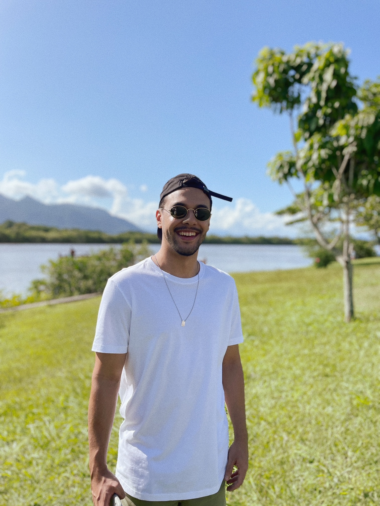

José Diogo Lobato Ribeiro

Tarde ensolarada na beira da lagoa
Sobre mim:
Nasci na cidade de Campos dos Goytacazes, tenho 30 anos e moro na cidade de Macaé no Rio de Janeiro. Atualmente estudo desenvolvimento web na Escola de Programação, Trybe.
Minhas habilidades
- Adaptabilidade - Considero que tenho uma certa facilidade diante de novos cenários e/ou adversidades em diversos ambientes.
- Colaboração - Sempre solícito nas atividades em grupo.
- Resiliência - Me mantém focado no objetivo, me faz ser forte e não pensar em desistir.